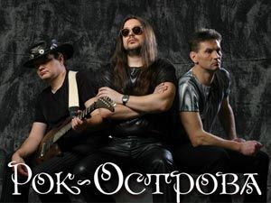

Things haven't been the sameSince you came into my lifeYou found a way to touch my soulAnd I'm never, ever, ever gonna let it go
[Bridge:]
Вряд ли ты сможешь ответить Кто нас соединил - небо или земля.В день когда ты меня встретил - Я решила, что жизнь начала с нуля.
Я верю, я верю в любовь,И в сказочную силу любви.Ведь всё зависит от нас самих.Танцуй!
Ты помнишь крылья за спиноюБыли, но остались навсегдаВ свете тех прекрасных юных дней.Ты помни, ты всегда со мною,Но обид по кругу не унять
Ледяной ветер в спину ударит,Ветер разлуки поможет проснуться.Нежный твой голос меня не обманет,Ты не заставишь меня оглянуться.
Давно прошла веселая пора.Все реже вижу я своих друзей.И пусть у всех заботы и дела -Чем старше дружба, тем она сильней.
Feeling like I'm breathing my last breathFeeling like I'm walking my last stepsLook at all of these tears I've wept
Чи намайг орхиод гарсан Би чамтай байхыг хүсээгүй Өглөө бүхэн нэг л хэвийнҮдэш бүр би эндээс явмаар

Я уйду и не вернусьЯ уйду, а ты не ждиЯ уйду и не дождусьКогда кончатся дожди
Видеть тебя всегдаХочется мне сейчас,Мысли твои читатьВ каждом движенье глаз,А ещё иногдаСлышать дыханье так,
Почему создали сами. Эту пропасть между нами. Я отвечу, если можно. Без тебя так сложно. Дни менялись, дни летели.
Λευκή μου τύχη και λευκή ζωή μουΓιατί τα βράδια κρύβεστε στο γκρίζο;Βλέπω στο άσπρο σας την προβολή μουκαι το μετά απ’ το μετά γνωρίζω
Где дышала тобою я,Там сжигала сама себя.Ты разбил сердце надвое,Но осталась одна твоя. Нежное тело моё в ночь опускается,
Девять жизней, сто дорог. Я прошла, а кто-то не смог. Поверить в это и потерялся где-то. Но если так нечестно всё. Зачем сейчас мне так легко?
Я видел сон,В твоих купался локонах,Огненных,Всё, из чегоМои сомненья сотканы,Тонко...
[Verse 1] My life is a movie and everyone's watching. So let's get to the good part and past all the nonsense.
Giulia: (x2)Standing in the rainCalling out your nameLife is not the sameWithout you…
Под солнцем таяли дни мои с тобою.Я видела тучи, но они прошли стороною.Куда убегают стрелки на часах,Когда я смотрю в твои глаза?
I can't go any further then this I want you so badly, it's my biggest wish
Every night in my dreams I see you, I feel you That is how I know you go on.